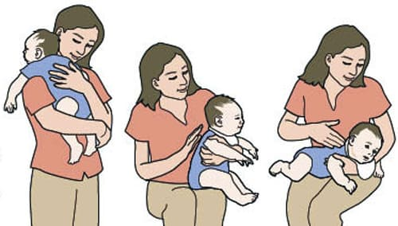

Икота — это безобидное неудобство, которое происходит в любом возрасте. Дети икают даже в утробе матери. Как правило, икота доставляет беспокойство младенцам и детям, только если она начинается сразу после кормления. Икота вызывается непроизвольными спазмами диафрагмы — эта большая мышца покрывает желудок и печень. Технически во время икания происходит вот что: начинается спазм диафрагмы, и она сокращается, заставляя вас сделать глубокий вдох. В это же время голосовые связки резко сжимаются, издавая звук икания.
ЧТО ДЕЛАТЬ
Хотя икота редко доставляет беспокойство ребенку, она. может причинять неудобства, если происходит слишком часто или длится слишком долго. Вот что можно сделать, чтобы контролировать икоту.
Уменьшение заглатывания воздуха во время кормления из бутылочки. Заглатывание слишком большого количества воздуха может вызывать икоту у младенцев. Попробуйте следующие хитрости:
Кормите медленно. Поскольку диафрагма расположена радом с желудком, часто есть зависимость между его деятельностью и икотой. Слишком быстрое наполнение и растяжение желудка может вызвать спазм диафрагмы, приводя к икоте. Попробуйте придерживаться правила «двоек» доктора Билла: «Ешьте в два раза меньше, в два раза чаще и жуйте в два раза дольше». |
Отследите провокатора. Ведите дневник икоты. Посмотрите, есть ли какая-либо последовательная структура или условия, провоцирующие икоту, и постарайтесь свести их к минимуму.
Поите. Дайте ребенку выпить маленькими глоточками стакан теплой воды с лимонной настойкой. Теория, объясняющая пользу питья при икоте, утверждает, что раздражение глоточных нервов тормозит нерв, запускающий икоту.
Глубоко вдохнуть. Когда ваш ребенок собирается икнуть, отвлеките его внимание от животика и грудной клетки. Попросите его вытянуть руки в стороны, глубоко вдохнуть и остаться в таком положении, пока он не досчитает про себя до семи, а затем медленно выдохнуть. Исследователи икоты считают, что задержка дыхания удерживает немного углекислого газа, который прекращает спазмы диафрагмы.
Дышать в пакет из плотной бумаги. Приложите пакет ко рту и носу своего ребенка и заставьте его медленно и глубоко вдохнуть, и выдохнуть через нос 10 раз. Вдыхание выдохнутого углекислого газа может облегчить икоту.
Отвлеките. Чтобы отвлечь ребенка от икоты, попытайтесь занять его любимой игрой или деятельностью. Помните, что иногда слишком сильный смех может спровоцировать заглатывание воздуха и усугубить икоту.

Здоровье ребенка от докторов Сирс / Сирс У. и др.